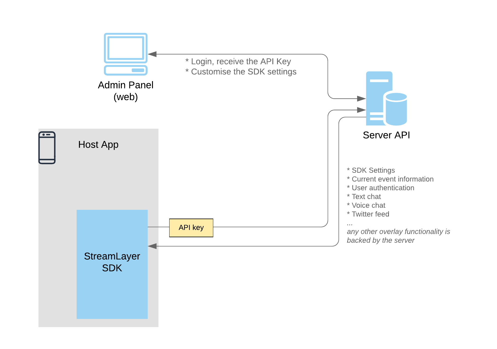

Install in Dash
Install in Dash
 Architecture Overview Reference
Architecture Overview Reference
Architecture Overview
Background
We assume you are already familiar with the StreamLayer framework functionality. If not, please read About StreamLayer first.
Overview
The system consists of 3 major components:
- Mobile Framework
- Admin Panel
- Server
You integrate the Mobile Framework into your application, set it up via the Admin Panel, it loads settings and data from the Server.

Integration process
To integrate the StreamLayer SDK into your application, you have to
- Get the API key to allow the SDK to communicate with the server.
- Integrate the framework into your application.
- Create a wrapper ViewController for the SDK, set it up and implement some additional methods to give the SDK access to system functionality (such as audio session, since the SDK needs it for Voice chat).
That was a very brief overview. For more details and step by step guidance please read the Integration Guide and other guides in the Guides section.